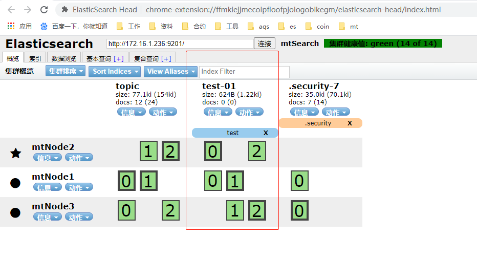
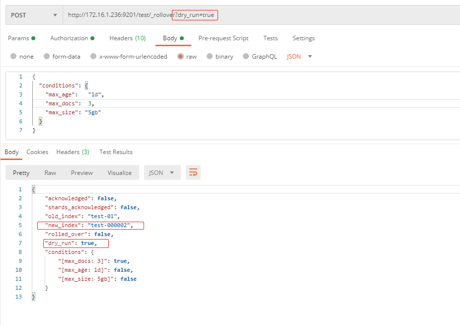
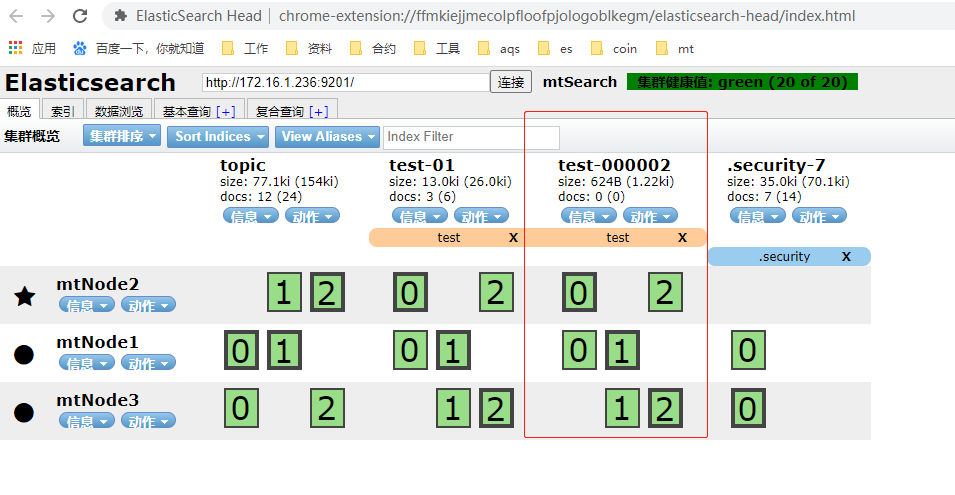
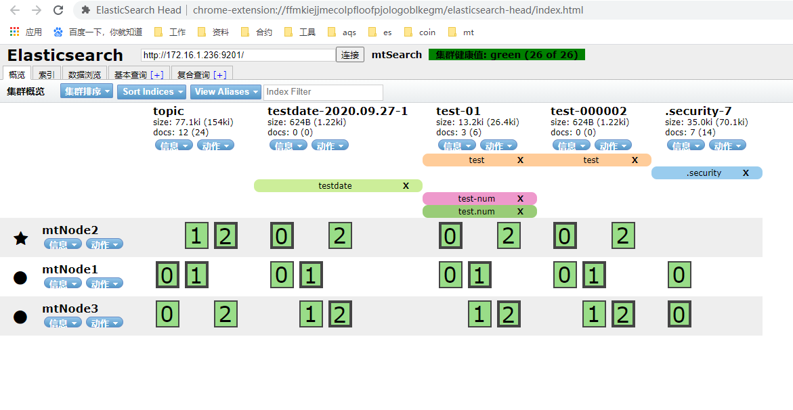
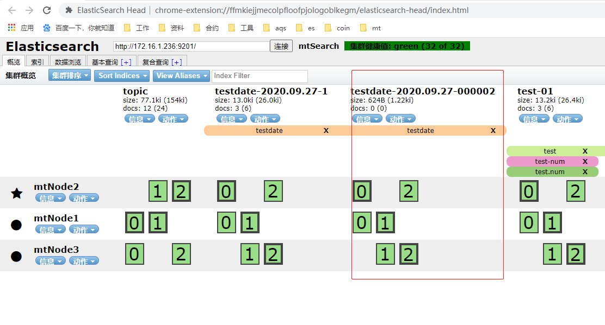

一、Rollover API简介与作用
Rollover 按字面意思就是：滚动过渡。它可以使你通过配置索引的时间段、文档数量、索引大小满足条件则自动过渡到新索引。
当rollover 触发时，将通过你目标索引的命名规则生成新的索引。
作用：比如有些索引数据只需要保存前几个月的数据，更之前的可以删除或者压缩做为冷索引，不再更新索引，很少查询。信息仍然需要可搜索。
在ES的ILM中定义索引有4个生命周期：
Hot(一般常用的生命周期，活跃更新与搜索)、Warm(只读模式，可以搜索)、Cold(也是可以搜索但是比Warm搜索速度要慢，即将删除)、Delete(不在需要，删除索引)
好处：提高存储分配的效率、高效管理时序数据
二、Rollover调用流程与参数
而要使用rollover api 要满足它的索引命名规则，通常以数字结尾。
rollover 调用流程：
- 1、创建符合rollover规则的索引
- 2、新建
is_write_index=true的别名 - 3、通过别名调用rollover api
先说说rollover api 的请求参数与请求体吧
请求参数：
- dry_run
默认false,去检测是否满足rollover 条件，只是检测不会执行rollover操作 - wait_for_active_shards
默认1，执行rollover操作之前至少有多少个acive shard, 可看：active shard - master_timeout
默认：30s,连接master节点的超时时间 - timeout
默认：30s，请求的超时时间
请求体参数：
- aliases
别名对象，可以参考：aliases update - conditions
这个就是rollover的条件，是个json对象，有3个属性：max_age(这个就是时间段的参数)、max_docs(这个是文档数)、max_size(索引大小) - mappings
和创建索引一样 - settings
和创建索引一样
以上参数都是可选的，如果啥都不传那就无条件rollover执行
一般来说，rollover 都配合索引模板（template）使用，因为rollover 一般索引的字段类型都一样。这样在调用rollover api的时候，就不需要带mapping、settings信息了。
创建模板可参考我之前写的：索引模板
为了演示整个流程，搞个索引模板：
PUT http://172.16.1.236:9201/_index_template/test_template |
1、普通索引命名
和平常索引名称一样，但需要满足在索引名称最后面以数字结尾，比如可以是yourIndexName-1、yourIndexName-001、yourIndexName-000001之类的，后面触发rollover之后会在后面的数字基础上+1操作，长度为6，不够6位都用零填充。
因为上面已经创建了索引模板，所有我这里创建索引的时候什么都不传。
// 创建一个 test-01 的索引，有索引模板 |
创建索引名称有一些条件：
- 必须全小写
- 不能包含：
\,/,*,?,",<,>,|,:,#,,等特殊符号 - 不能以
-、_、+开头 - 不能超过255个字节
- 不建议以
.开头，这种格式的建议是那种隐藏索引或者是插件索引才会这样配置
2、创建索引别名
// 给test-01 索引创建别名 test |
简单的创建别名为test，并把is_write_index设为true。is_write_index 的意思是使别名具有写索引，别名一次只能有一个写索引。可参考：indices-aliases
也就是说，其实我们的增删改查，调用api的时候直接使用index_alias 就可以了。
如下图：

3、开始rollover过渡索引
随便存入几条数据,然后可以使用 dry_run参数检测是否满足rollover条件。

发现满足条件了，文档数满足了，返回true。之后真正请求rollover
# 真正请求,这里的请求url格式为：/alias/_rollover |
之后生成新的索引：test-000002,如下图：

当Rollover 成功的时候，使用别名进行插入数据的时候，就是新索引进行写入了。这样就起到数据过渡到新索引的作用了。
因为多个索引使用同一个别名所以查询的时候还是可以查询到之前索引的数据，当之前索引的数据不需要了，就可以删除了。
rollover 的缺点就是得手动调用，如果是每天都需要生成数据，每天都手动请求那就很麻烦了。我们可以使用定时器进行调用。
我不知道有没有配置可以自动调用的，如果有，非常感谢看到的朋友能给我留言。
定时器配置时间自动触发rollover，在Java代码中如何调用rollover，使用RolloverRequest 对象即可。来看看Rollover api 调用demo。
/** |
http的用法，上面的代码都可以按需配置。
基本用法都介绍了，来介绍日期索引的Rollover。
4、Rollover设置日期索引
支持日期类型索引的组成形式：<static_name{date_math_expr{date_format|time_zone}}>
- static_name
静态本文，也就是平常的静态索引名称 - date_math_expr
动态日期数学表达式 - date_format
日期格式化，与java的日期格式化对应，默认为：yyyy.MM.dd - time_zone
还可以选时区，默认为：utc
除了上面的规定外还有一些规约：
- 日期的索引必须包含在尖括号内
- 最终的索引名称必须转为
URI编码 - 一些特殊符号的编码：
特殊符号 URI解析 |
如果需要使用
{、}符号需要用\进行转义。
可以看一些官方例子，比如当前时间为：2024年3月22日 utc时区：
最终索引表达式 最终索引解析为 |
1、创建日期索引
解释那么多，来实战吧。打算创建包含年月日的索引。为了符号之前创建的索引模板，以test开头.
比如今天2020-09-27 日期
// 格式：testdate-2020-09-27-1 转为表达式->：<testdate-{now/d}-1> 转为URI-> %3Ctestdate-%7Bnow%2Fd%7D-1%3E |
2、创建日期索引别名
POST http://172.16.1.236:9201/_aliases |

3、开始rollover
POST http://172.16.1.236:9201/testdate/_rollover |
因为没加数据，而且是同一天，那当然没变了，加数据再来就可以了

发现日期没有改变，因为日期格式最小时间单位是天，所以至少明天才能使时间部分的索引改变
特别要注意的: 这个时间是以你rollover成功时开始算的，比如你今天
12:00:00这个时间点rollover成功，那么1d（一天）也就是到明天的12:00:00这个时间或之后rollover才会改变成功。值得注意的是：0点之后是不会改变的
但是写篇笔记还得等明天这个接受不了，那就改一下日期索引精确到年月日时分秒不就行了吗！详情如下
// 现在东八区时间是：2020.09.27 13.53.43 |
之后创建别名：
POST http://172.16.1.236:9201/_aliases |
之后尝试rollover
// 尝试rollover |
自此，rollover基本讲完了。时分秒的索引只是为了演示使用，实际生产还是不建议使用的，因为没有意义。
参考链接：